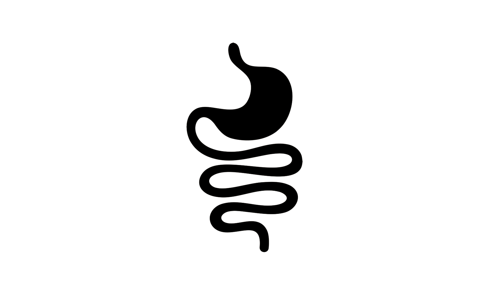
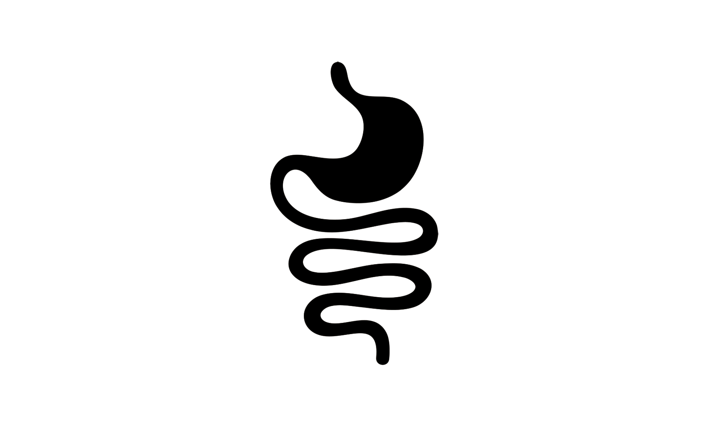

A2 Milk
Brand identity
The refined A2 Milk® identity moves away from an uninspired, generic design towards one that better reflects the brand's passion and belief in their unique selling point. The aim is to highlight the product’s quality, rather than rely on brand perception and reputation.
The simple wordmark logo highlights quality and encourages brand recognition.
The colour palette of vibrant and rich tones convey authenticity and wellness, whilst also aligning with industry standards.
The primary typeface is bold yet playful. The secondary typeface is refined and focused. Paired together, they strike a balance between passion and quality.
The clean and minimal illustration style enhances shelf presence, with the gut visual clearly conveying their ‘easier on digestion’ benefit.

 
